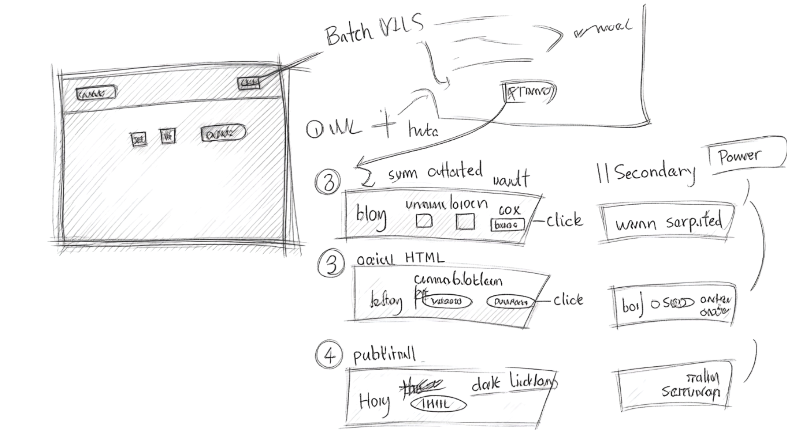
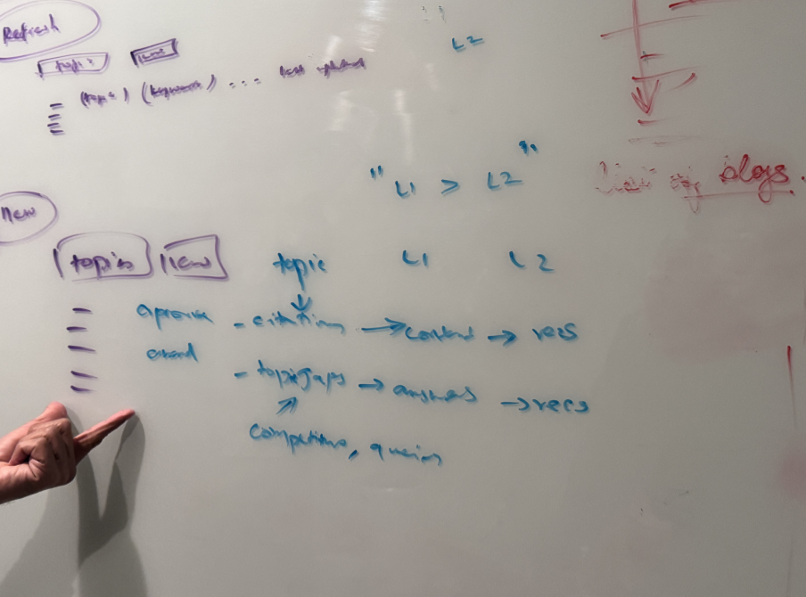
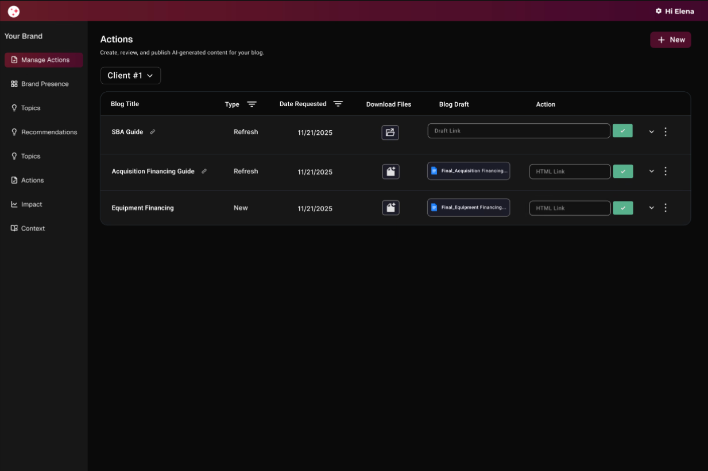
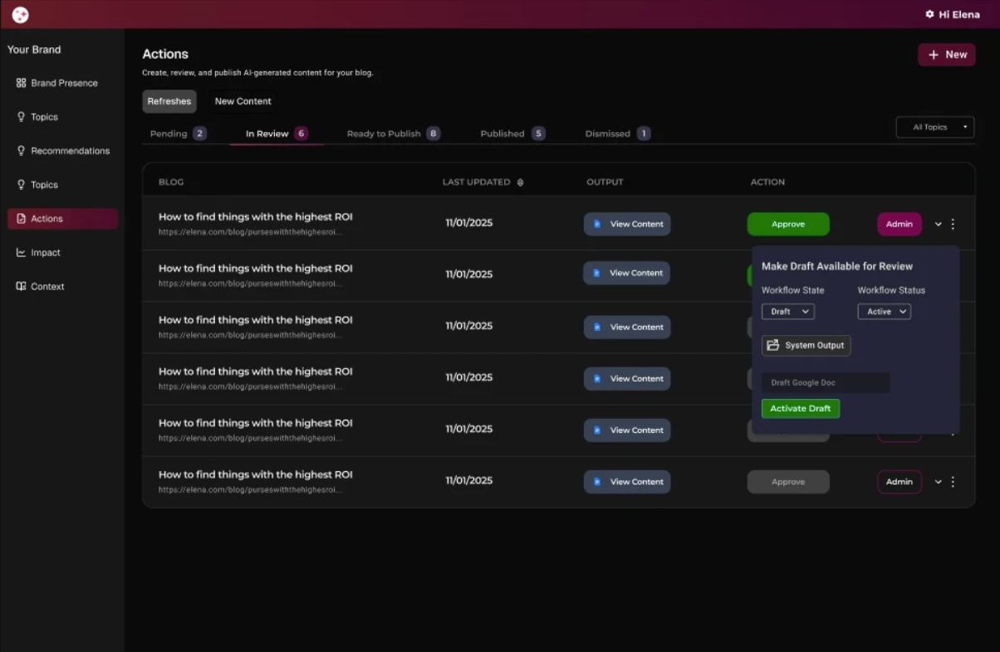
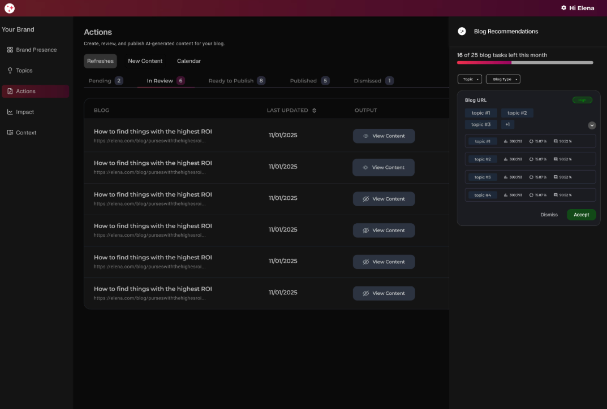
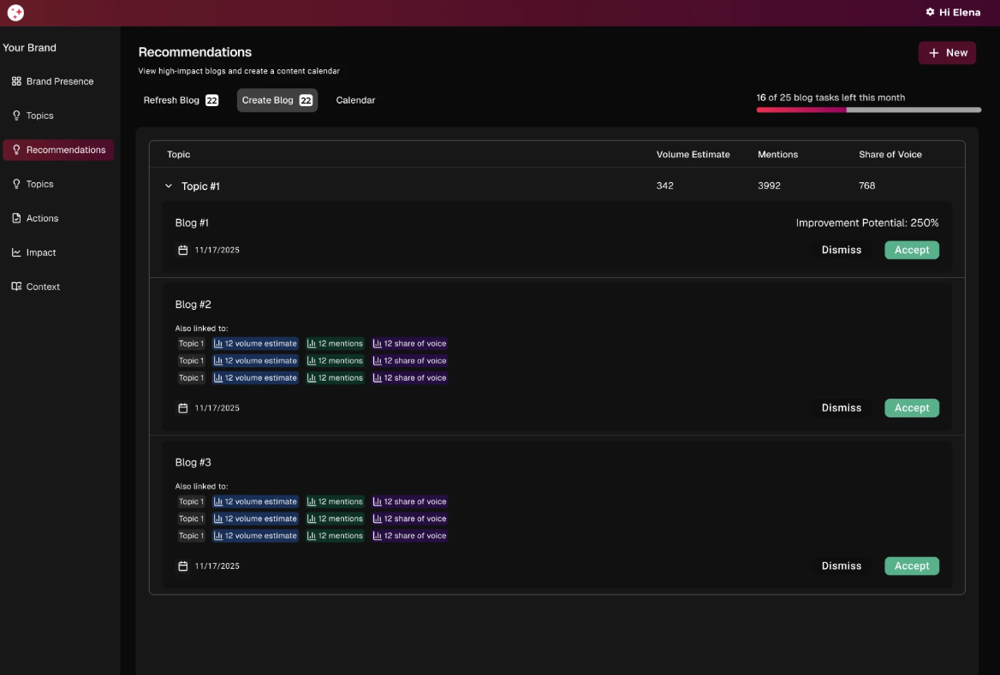
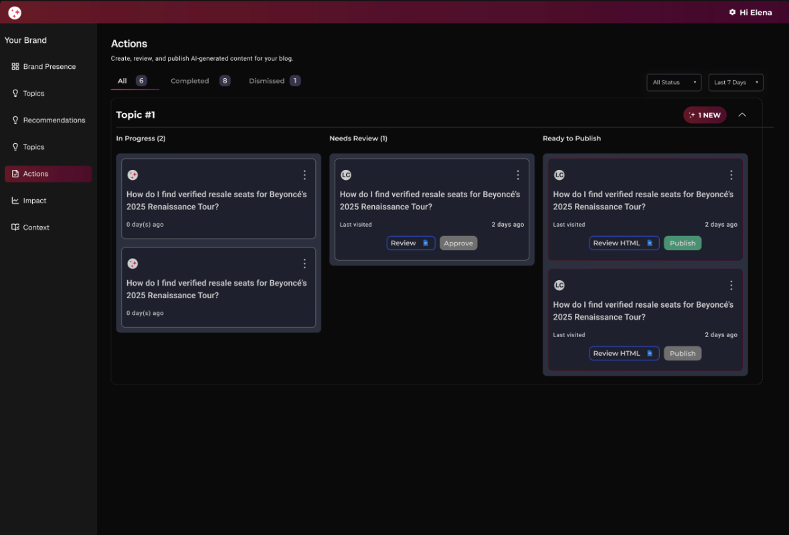
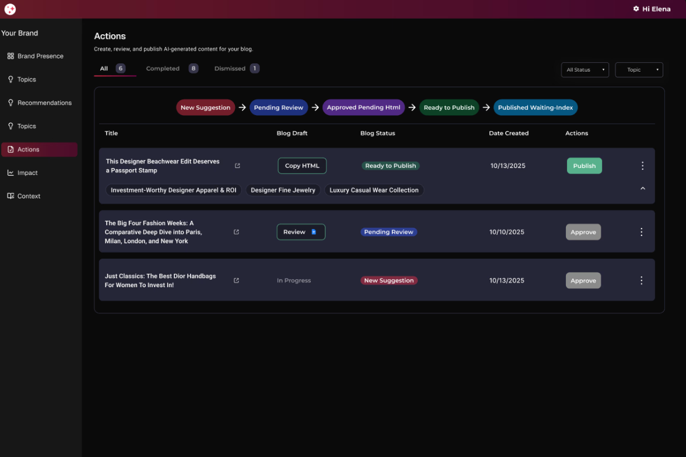
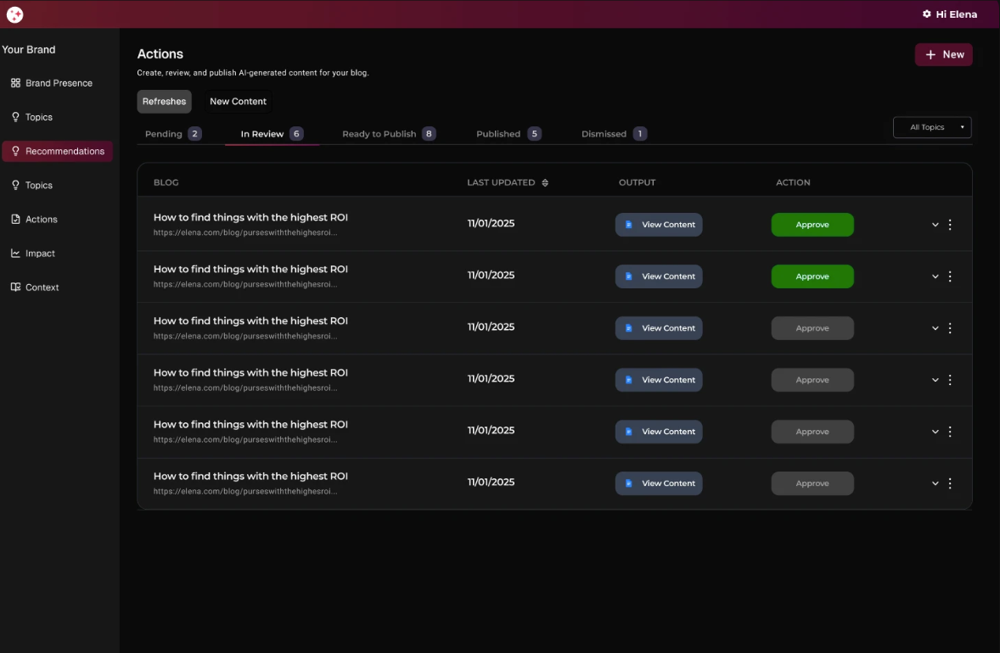
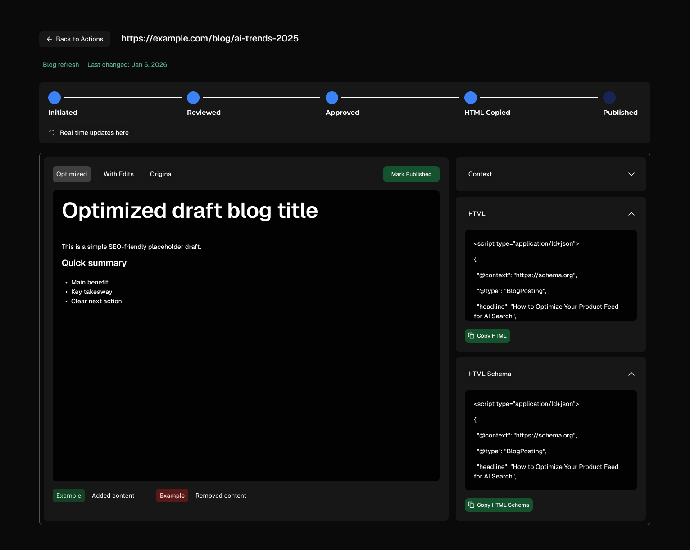

shipped a dashboard that replaces fragmented manual workflows
4+tools replaced
~1momvp → v1
3features shipped
roleassociate product designer
scopeinternal admin feature lead
teamdesign · engineering · customer success
statusshipped ✦
overview
an end-to-end ai visibility platform
crossfill is a b2b saas platform that gives brands visibility into how they appear in ai-generated search results — and tools to improve that presence. as llms like chatgpt, perplexity, and google's ai overviews increasingly answer questions directly, traditional seo metrics no longer tell the whole story.
problem we had to solve
the optimization workflow lived outside the product
teams were coordinating through slack, tracking in spreadsheets, storing drafts in google drive, and reviewing in docs. none of it connected and was not scalable
the core problem wasn't a ui problem — it was a process problem that needed a product solution. the optimization workflow was fragmented across multiple disconnected tools, creating unreliable tracking, duplicate work, human error, and slower publishing velocity.
⚡
manual handoffs between teams
every step required someone to manually notify the next person — no automation, no in-product state changes.
🔁
duplicated tracking systems
parallel records existed in both the product and spreadsheets — mismatched data, wasted effort, constant reconciliation.
📤
approvals outside the product
clients had to leave the dashboard entirely to review content in google docs before approving anything.
❓
unclear ownership of next steps
no clear task assignment in-product meant internal teams spent time following up manually rather than designing.

objective
design a dashboard that lets teams take action directly in the product
the goal was to move the full optimization cycle — from recommendation to approval to publishing — inside crossfill. no slack threads. no spreadsheets. no leaving the product to review a google doc.
design a dashboard experience that supports the end-to-end optimization workflow and allows teams to take action directly in the product.
understanding the existing system
mapping what we actually had
before designing solutions, i audited the current product and the external tools teams were using alongside it. the goal was to understand where each tool started and stopped. i started by sitting in on customer success calls and mapping the process step by step.
existing workflow mapped against repeated failure points
typical step-by-step flow
01 of 06
client approves content via slack
client reviews which content to prioritize and communicates approval via slack. no record is created in the product — approval lives only in the slack thread.
tools used
slack
pain point
no approval record exists in the product — decisions are invisible to the system
02 of 06
add to spreadsheet to track statuses
approved items are manually added to the spreadsheet to track statuses and organize deliverables. the spreadsheet becomes the team's working pipeline, maintained by hand.
tools used
spreadsheet
pain point
every status update is a manual entry — no connection to the product means the pipeline drifts from reality
03 of 06
content generated and shared via google docs
once the internal team generates or optimizes content, it is copied into google docs for client review. for optimized drafts, the team uses the compare feature so clients can see exactly what changed.
tools used
google docs
pain point
review happens entirely outside the product — feedback gets buried in comments with no link back to workflow state
04 of 06
client decision — changes or approval
client wants changes
client edits the google doc directly with their requested changes and the cycle continues.
↩ loops back to internal review
client approves
client communicates approval via slack or marks it approved in the spreadsheet.
no automated state change in the system
05 of 06
html + json generated and delivered via google drive
internal team generates html and json from the approved content. files are delivered via google drive and the spreadsheet is updated to reflect delivery.
tools used
google drivespreadsheet
pain point
file delivery is disconnected from status tracking — the spreadsheet must be updated separately every time
06 of 06
client publishes and impact tracking begins
client publishes the content and communicates via slack or inputs the published date in the spreadsheet. the internal team must manually mark it published to begin tracking seo impact.
tools used
slackspreadsheetsystem
pain point
seo tracking requires a manual trigger — if the team misses the update, impact data is delayed or lost entirely
typical step-by-step flow — manual coordination across slack, spreadsheets, google drive, and docs
slack
no record, no state, no searchability
used for all internal communication and client notifications — conversations disappeared with no audit trail and no way to query past decisions.
spreadsheets
manually maintained by multiple people
tracking task status, publishing dates, and content ownership across people with no single source of truth — always at risk of drifting out of sync.
google drive + docs
completely outside the product
content review, and approval lived here. after approval, the html used to publish the content was also delivered via docs. there wasno visibility into where things stood without leaving the dashboard.
engineering — confirmed feasibility
capabilities confirmed with engineering before any design decisions were made
for mvp, teams would continue using google docs for content review and approval — that dependency was intentionally kept. the priority was to eliminate reliance on slack for status updates and spreadsheets for tracking, replacing both with in-product workflow state. a native inline editor to fully replace google docs was scoped to post-mvp, once the core flow was validated.
customer success insights
already on the inside before the design work started
when i joined crossfill i worked alongside the customer success team, working directly with clients through the product lifecycle. that gave me a ground-level view of where things were breaking before any research was scoped.
i saw firsthand how much of the cs workload was coordination that should have lived in the product. i had that experience in mind designing the dashboard and ran additional research to pressure-test those observations and surface anything i had missed.
finding 1: clients missed required actions
without any in-product prompts or status visibility, clients were regularly unaware that something was waiting on them. cs was sending manual reminders for actions the product should have surfaced automatically.
finding 2: approval stalled outside the product
clients had to leave the dashboard and review content drafts in google docs before they could approve or dismiss anything. the context switch meant work sat longer than it should have and approvals were delayed.
finding 3: cs was doing the product's job
a significant portion of cs time was spent nudging approvals and updating statuses across systems rather than doing client strategy work. the coordination load existed because the product had no way to hold workflow state.
engineering capability review
scoping what was actually buildable
before committing to any design direction, i ran a feasibility review with engineering. i came in with a prioritized list of capabilities and we worked through what was possible within the timeline — and what needed to be deferred.
01
confirmed
permission-based admin controls
a separate admin layer with role-based access gave the internal team full visibility and management control without exposing admin functions to clients.
02
confirmed
in-dashboard accept/dismiss + gsc data
blog recommendations were linked to google search console. clients could accept or dismiss directly in the product, triggering backend state changes automatically with real performance data alongside each action.
03
confirmed
action management and tracking
once a recommendation was accepted, teams could track it through next steps, view the content draft, and move it through to approval inside the product. no spreadsheets, no external tracking.
04
deferred to post-mvp
inline content editor
a native editor for reviewing and editing content drafts directly in crossfill was technically possible but held for post-mvp. v0 bridged the gap with google docs while the core flow was validated.
designing the mvp
v0 was the mvp, not the final solution. it was designed as a lightweight tool for tracking and state management, giving teams a shared source of truth while the native editor was still in development.
teams continued using google docs for content review during this phase, but now had a single place to track workflow status, reducing reliance on slack and spreadsheets.

mvp ideation — v0 was used for about one month
mvp — admin design
admin controls
giving the internal team its own space
the first decision was how to separate what clients see from what the internal team needs to manage.
i led the design of how to separate the client experience from internal workflows. early explorations included a fully separate interface with its own login, but through iterative testing and alignment with team needs, i identified a more seamless approach that reduced friction while still clearly distinguishing internal and client facing functionality.
separate tab (login control)
✕explored but not adopted
it introduced duplicated workflow logic that would be replaced once the editor shipped
admins and the content team would not be looking at the same screen the client sees, creating a context gap during reviews

role-based access within the same view
✓shipped
lower engineering complexity: avoids maintaining a separate admin page and reduces duplicated logic
reuse existing backend + state rules: the popup can call the same create/update flows the client view uses, with an added permission gate/li>

mvp — feature design
two features that closed the loop
v1 replaced the manual workflow with three interconnected features, each targeting a specific failure point. together they made the full optimization cycle operable inside the product for the first time.
content recommendations + calendar
recommendations with real context
the recommendations feature surfaced blog optimization tasks with impact scores, creation dates, and associated topics linked directly to google search console data, so clients had the performance context they needed to act without leaving the product.
slide-in panel
✕explored but not adopted
too much information in one view
the calendar structure buried the priority signal that impact scores were meant to surface

separate tab
✓shipped
workflow execution has a main view; planning + guidance lives in its own dedicated space
scales better over time without cramming the page

actions page layout
structure that shows who owns what
the actions page needed to make workflow state visible at a glance. several layouts were explored before landing on the approach that kept state clarity without structural confusion.
kanban layout
✕explored but not adopted
a single blog could belong to multiple topics, creating ambiguity about where it “lives”
cognitive load increases quickly as cards accumulate across columns
state visibility was secondary

actions on one tab
✕explored but not adopted
visually noisy due to heavy reliance on color to distinguish states
action buttons appeared inconsistently, making next steps less obvious
felt more like a database view than a workflow tool

state-based tabs
✓shipped
clear mental model: one tab = one action
improved scannability and prioritization
scales cleanly as volume grows

post-mvp — native editor
bringing the workflow fully in-product
v1 validated the workflow. the next phase eliminated the last external dependency — google docs — by building a native inline editor directly into crossfill.
ideation
editor feature requirements
the team mapped out what an in inline editor would need to support in order to replace google docs
viewing content
clients needed to read the full content draft in context before making any decision, without leaving the dashboard or opening a separate document.
seeing changes
the editor needed to surface edits and revisions clearly so clients and the internal team could track what changed between drafts without relying on version history in google docs.
approve or edit
clients needed to either approve content as-is or make inline edits directly. both actions had to trigger the correct backend state change automatically, without a manual follow-up step.
html generation
once content was approved, clients needed to copy the generated html and json schema directly to publish to their cms. the editor had to produce publish-ready output without any manual export or file handoff.
wireframes

final design
the inline editor
the native editor brought content review, drafting, and approval directly into the crossfill dashboard — eliminating the google docs handoff entirely and keeping all workflow state in one place.
viewing, approving and editing content
after approval — html generation and publication
outcomes + impact
results after shipping
shipping the native inline editor alongside the core workflow changes had a measurable effect on how clients and the internal team interacted with the platform.
30%
reduced turnaround time
content approvals moved faster once clients could review, edit, and approve directly in the dashboard without switching to google docs.
90%
less reliance on customer success
clients no longer needed to route update requests through the cs team — the in-product workflow gave them the visibility and control to act independently.
50%
increase in platform engagement
bringing more of the workflow into crossfill gave clients a reason to return to the product regularly rather than managing approvals outside it.
next steps
where crossfill goes from here
v1 closed the immediate gap. the roadmap is focused on pulling more of the optimization lifecycle fully in-product — eliminating the remaining external tool dependencies and building deeper integration with ai search performance data.
01real-time alerts when performance drops or content needs attention
02provide clear reasoning behind each recommendation to build trust and transparency
03allow users to review each change individually and choose which recommendations to accept or reject
04provide clear progress reporting to show what was done and what improved
05enable instant html generation so approved content can be immediately copied and implemented
06versioning and re-optimization workflows — track content changes and surface new opportunities over time